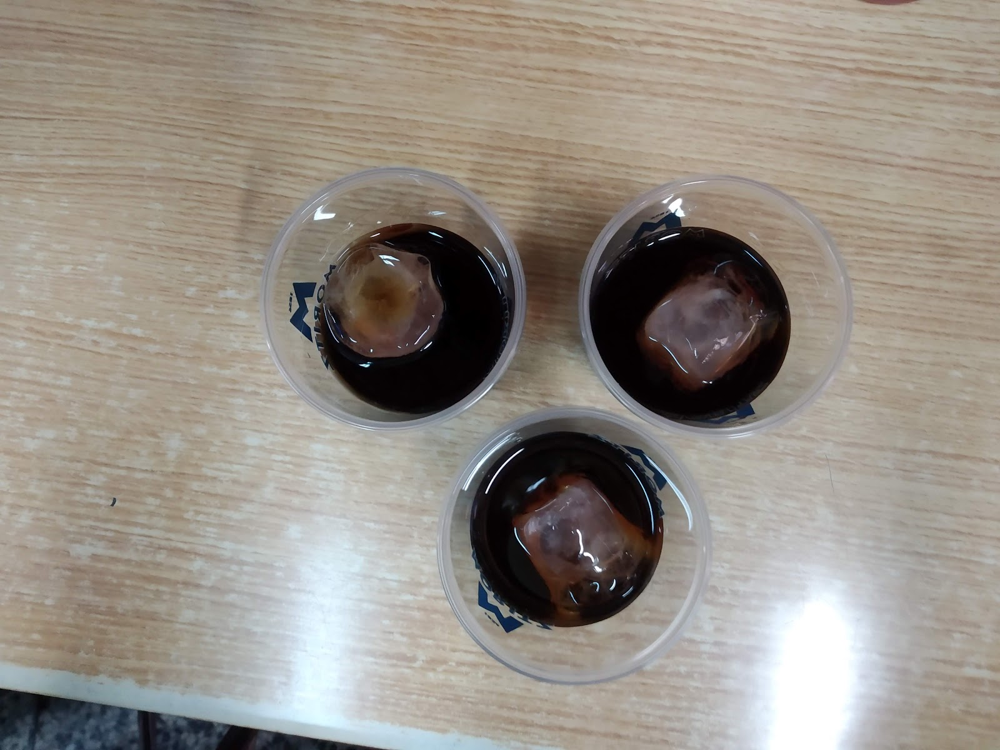
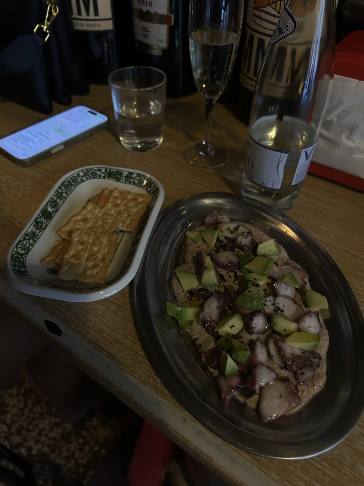
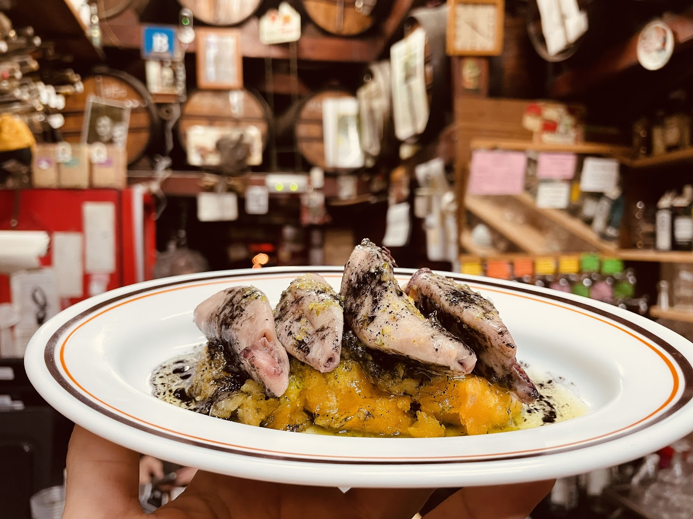
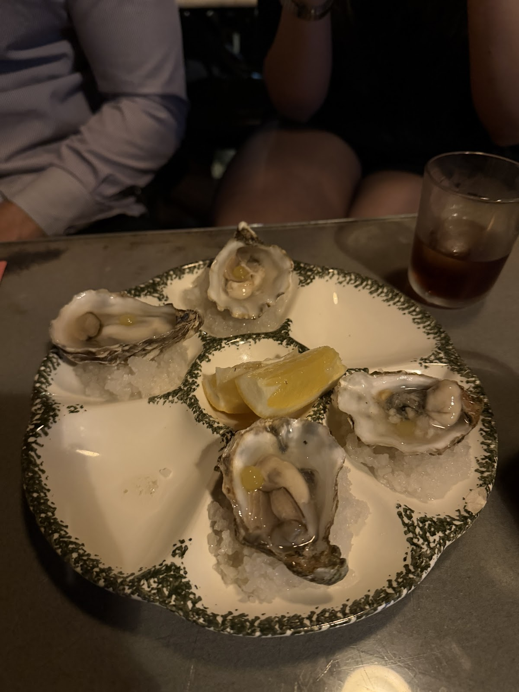
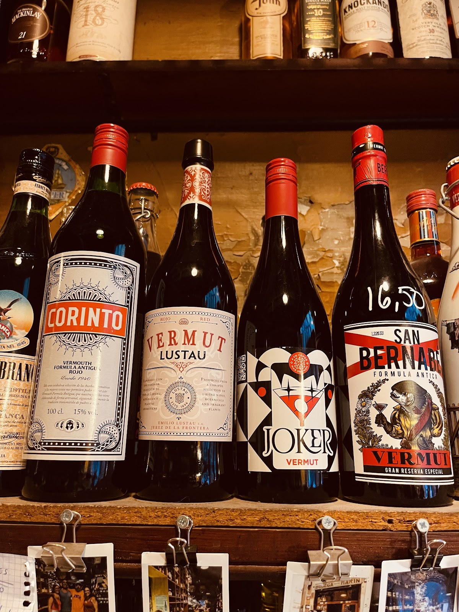
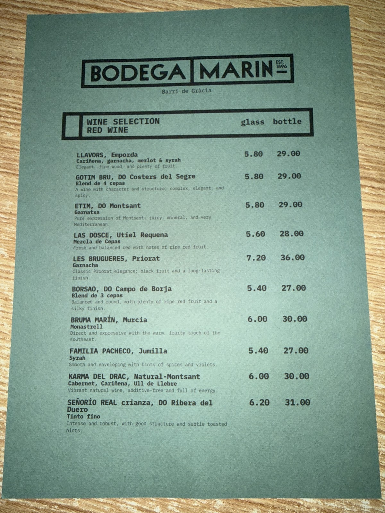

Bar de tapes al cor de Gràcia. Vermut, embotits i plats de tota la vida, portat per la Vanessa i en Luis.A tapas bar in the heart of Gràcia. Vermouth, cured meats and timeless dishes, run by Vanessa & Luis.
Entrar a la Bodega Marín es entrar en otra época: mostrador de mármol, botas de vino y el trato cercano de siempre. Comida honesta que sale rápido y sienta como en casa.Walking into Bodega Marín is stepping into another era: a marble counter, wine barrels and the warm welcome of always. Honest food that comes out fast and feels like home.





